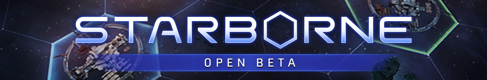

Starborne: Sovereign Space
A downloadable game for Windows
Starborne is a new strategy MMO for PC where you take on the role of space commander to compete against thousands of other players over control of the galaxy. Forge alliances, build massive fleets and wage wars to expand your space station into a galactic empire!
Key Features
- Define your Playstyle: Command fleets on the frontlines, sabotage enemies through covert operations or become the industrial backbone of your alliance.
- Massive Scale: Explore, settle and conquer a seamless galaxy map supporting over 4000 concurrent players.
- Empire Management: Gather resources, upgrade buildings and construct ships to secure your borders.
- Deep Customization: Collect over 200 cards to enhance your fleets, outposts and space stations, each granting unique bonuses.
- Battle Royal Exteme: Take part in epic cross-map Alliance vs. Alliance battles and shape the ruthless diplomatic landscape.
Join the Community!
| Status | Released |
| Platforms | Windows |
| Rating | Rated 4.7 out of 5 stars (3 total ratings) |
| Author | Solid Clouds |
| Genre | Strategy |
| Made with | Unity |
| Tags | 4X, Massively multiplayer, mmorts, Multiplayer, online, Real time strategy, Sci-fi, Space, Space Sim |
| Average session | About a half-hour |
| Languages | English |
| Inputs | Keyboard, Mouse, Touchscreen, Smartphone |
| Multiplayer | Server-based networked multiplayer |
| Links | Homepage, Community, Twitter, Discord |
Download
Download
Starborne Installer 39 MB
Install instructions
Installer for Windows.
Development log
- Starborne b1.2 Patch NotesApr 15, 2020
- Starborne 1.0.0 Beta Patch NotesApr 03, 2020
- Starborne Open Beta Starts TodayApr 02, 2020
- Server 3 is Live!Jul 31, 2019
- Server 2 is Live!Jun 02, 2019
- Join the Final Starborne Alpha Test!Apr 15, 2019
- Starborne 0.8.0.21 Patch NotesNov 07, 2018
- Starborne: Sovereign Space Alpha Test Starts Today!Oct 29, 2018